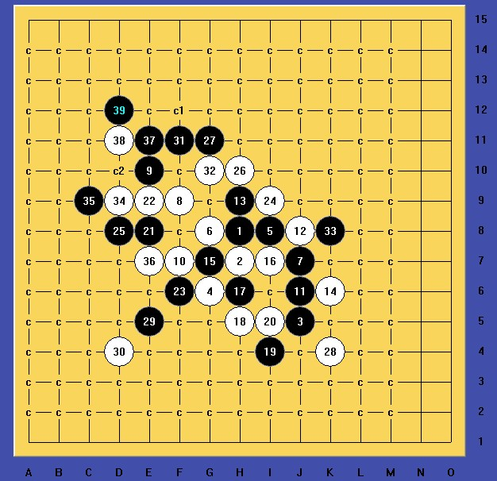
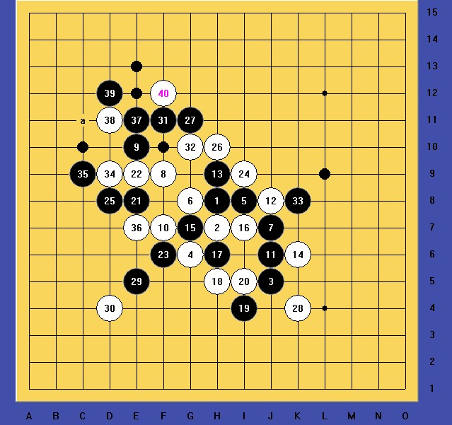
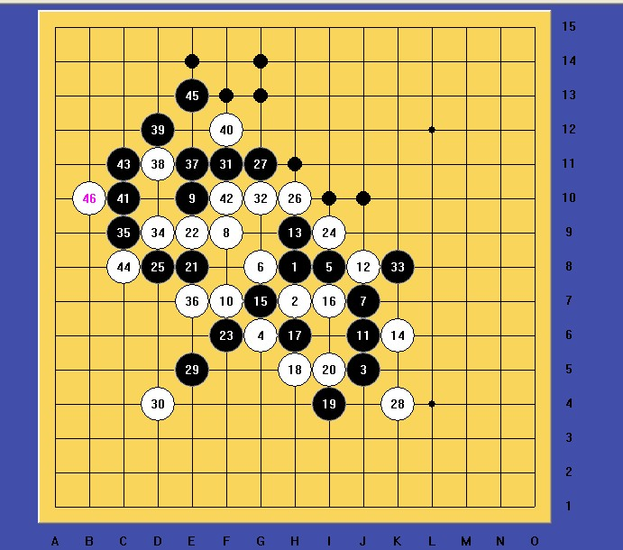
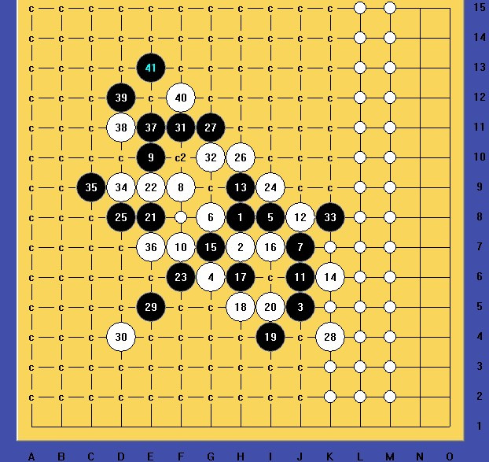

请问这个36是否必败，如果是，望大师指点，谢谢
首页
妖刀天下
#1 请问这个36是否必败，如果是，望大师指点，谢谢 作者：拈棋居 发表时间：2012-4-6 13:07:02
#2 Re:请问这个36是否必败，如果是，望大师指点，谢谢 作者：山城刀客 发表时间：2012-4-6 19:41:37
拆这个局弄了一下午，哎，要是方向错了，就很无奈了，其实答案很简单，有时就是想不到！

附上小谱：
 1.rar
1.rar

试了好几个41，花费了大量时间。

这一路41，到45无奈！

这一路41，有唯一强防，无法地毯。
［ 日月丽天 于 2012-4-7 8:51:27 时花20金币送鲜花一朵］
［ 拈棋居 于 2012-4-7 16:09:22 时花20金币送鲜花一朵］
#3 Re:请问这个36是否必败，如果是，望大师指点，谢谢 作者：小红眼镜 发表时间：2012-4-6 20:55:35
 LZ有点儿脸熟啊。。。咳咳
LZ有点儿脸熟啊。。。咳咳
#4 Re:请问这个36是否必败，如果是，望大师指点，谢谢 作者：逆刃 发表时间：2012-4-6 21:37:21
［ 日月丽天 于 2012-4-7 10:56:26 时花20金币送鲜花一朵］
［ 拈棋居 于 2012-4-7 16:09:41 时花20金币送鲜花一朵］
#5 Re:请问这个36是否必败，如果是，望大师指点，谢谢 作者：日月丽天 发表时间：2012-4-7 10:57:21
楼上两位方法，都杀 ［ 失落刀 于 2012-4-7 12:12:37 时花20金币送鲜花一朵］
［ 拈棋居 于 2012-4-7 16:10:12 时花20金币送鲜花一朵］
#6 Re:请问这个36是否必败，如果是，望大师指点，谢谢 作者：拈棋居 发表时间：2012-4-7 16:14:14

真可惜了，我这几天无法上网，朋友帮忙地毯了，不过，还是谢谢几位的答案。
#7 Re:请问这个36是否必败，如果是，望大师指点，谢谢 作者：拈棋居 发表时间：2012-4-7 16:17:59
顺便问下，这个8是否有结论
#8 Re:请问这个36是否必败，如果是，望大师指点，谢谢 作者：拈棋居 发表时间：2012-4-7 16:25:36
由于最近课多，临近考试，我拆棋时间就很少了。刚查了一下谱，这个白8我还剩一个24没拆，希望大家指点下，谢谢。
#9 Re:请问这个36是否必败，如果是，望大师指点，谢谢 作者：反转 发表时间：2012-4-7 20:21:45
同3楼。
#10 Re:请问这个36是否必败，如果是，望大师指点，谢谢 作者：屏蔽 发表时间：2012-4-8 9:08:13
怎么还有不会传图片的。
#11 Re:请问这个36是否必败，如果是，望大师指点，谢谢 作者：拈棋居 发表时间：2012-4-8 15:12:26
OK.8已经地毯完了，谢谢大家的，关注。
#12 Re:山城刀客【==Re:请问这个36是否必败，如果是，望大师指点，谢谢==】 作者：拈棋居 发表时间：2012-4-8 17:18:55
你的42，杀出来看看，可能有误杀哦，不过我白8确实是终结了
#13 Re:请问这个36是否必败，如果是，望大师指点，谢谢 作者：拈棋居 发表时间：2012-4-8 17:20:19
2楼的地毯谱，检查过没，那个42可能有问题哦，我暂时没看到43的必胜。
#14 Re:请问这个36是否必败，如果是，望大师指点，谢谢 作者：拈棋居 发表时间：2012-4-8 17:25:57
啊哦，不好意思，确实2楼的也地毯了，我的软件不行，呵呵。